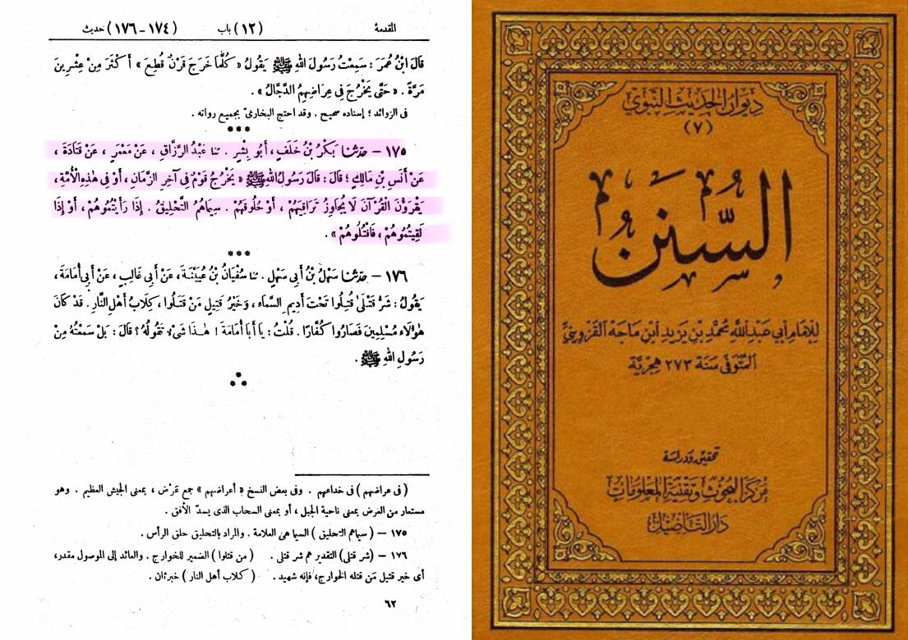
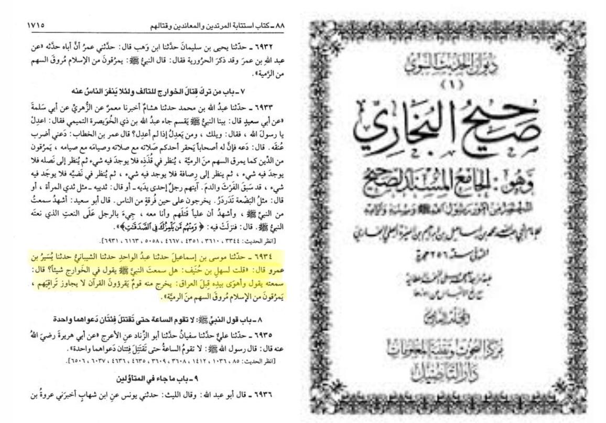

Prophecy of the Khawarij from the authentic Sunnah

Sunan Ibn Majah 175
It was narrated that Anas bin Malik said:
"The Messenger of Allah (ﷺ) said: 'At the end of time or among this Ummah, there will appear people who will recite the Qur'an but it will not go any deeper than their collarbones or their throats. Their distinguishing feature will be their shaved heads. If you see them, or meet them, then kill them.'"

Sahih al-Bukhari 6934
Narrated Yusair bin `Amr:
I asked Sahl bin Hunaif, "Did you hear the Prophet (ﷺ) saying anything about Al-Khawarij?" He said, "I heard him saying while pointing his hand towards Iraq. "There will appear in it (i.e, Iraq) some people who will recite the Qur'an but it will not go beyond their throats, and they will go out from (leave) Islam as an arrow darts through the game's body.' "